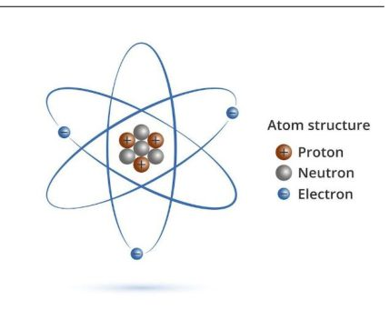
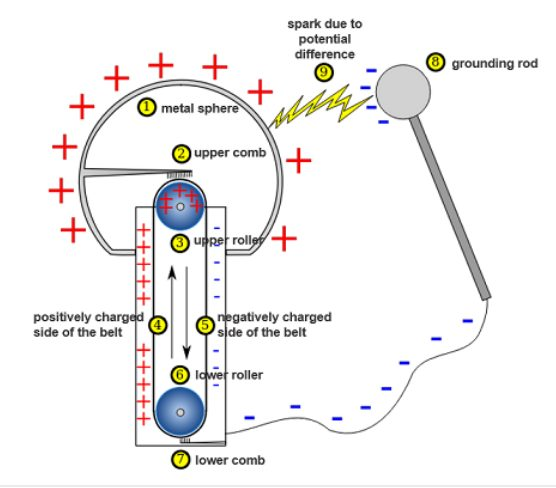

2.1 Static electricity
Charge is a fundamental property of all matter (like mass).
- There are two forms of charge: positive and negative.
- Atoms contain positive charge (protons) and negative charge (electrons).
- Electrons are usually the most mobile charge carriers.

- When there are equal numbers of positive and negative charges, an object is neutral.
- When there is an excess of electrons, an object is negatively charged.
- When electrons are removed, an object is positively charged.
- An object with equal numbers of positive and negative charges is .
- An object with an excess of electrons is .
- An object that has had electrons removed is .
Objects attract or repel depending on their charges:
| Combination of charges | Result |
|---|---|
| Positive + positive | |
| Negative + negative | |
| Positive + negative |
Static electricity demo: the Van de Graaff generator
Electrons are easily removed from atoms, leaving an object positively charged. In a Van de Graaff generator (VDGG), the upper "comb" is connected to a large metal sphere. A belt runs against the comb, removing electrons from it, which makes the whole metal sphere positively charged.

Use the Predict–Observe–Explain model for each scenario: predict what will happen, observe the demonstration, then explain it.
A source of electrons (a grounding rod) is brought near the large sphere. Explain what happens.
An electrical spark jumps from the rod to the sphere. The sphere is positively charged, so electrons from the grounding rod are attracted to it and travel across the air gap, which we see as a spark.
A person with long hair stands on a chair (isolated from the ground) and keeps their hand on the sphere as the VDGG charges. Explain what happens.
Their hair stands on end. The sphere is positively charged, and the person, isolated from the ground, also becomes positively charged. Each hair has the same (positive) charge, so the hairs repel each other and point in all directions.
A pile of small foil trays is placed on the VDGG sphere, which is then switched on. Explain what happens.
The trays fly off one by one. They are isolated from the ground, so they become positively charged like the sphere. Like charges repel, so the trays repel the sphere and each other and fly apart.
A graphite-coated ball on a string (insulated from the ground) hangs close to the charged sphere. Explain what happens.
The neutral ball is first attracted to the positive sphere. When it touches, some electrons move from the ball to the sphere, so the ball becomes positively charged (the sphere stays positive). Now both are positive, so the ball is repelled and swings away.
A Perspex rod is rubbed with wool and brought close to a narrow stream of water. Explain what happens.
The stream of water bends towards the rod. At first the rod and cloth are neutral. Rubbing transfers electrons between them, leaving the rod charged (and the rod is an insulator, so the charge stays even while it is held). When the charged rod is brought near the water, the water molecules turn so that their oppositely charged ends face the rod, and the stream is attracted towards it.
Section 2.1: Key summary questions
What are the two types of charge in an atom, and which part of the atom holds each?
Positive charge is held by the protons (in the nucleus); negative charge is held by the electrons.
If a neutral piece of metal that is isolated from the ground loses electrons, what will its overall charge be?
| Objects | Result |
|---|---|
| Electron + proton | |
| Positive sphere + negative sphere | |
| Negatively charged rod + neutral paper | |
| Negatively charged ball + electron |
A charged object attracts a neutral one, because the charges in the neutral object shift slightly so that opposite charges are closer.
Explain why a positively charged plastic ball that makes contact with the ground becomes neutral.
The ground is a huge source of electrons. Electrons flow from the ground onto the positively charged ball until its positive and negative charges are equal, so it becomes neutral.